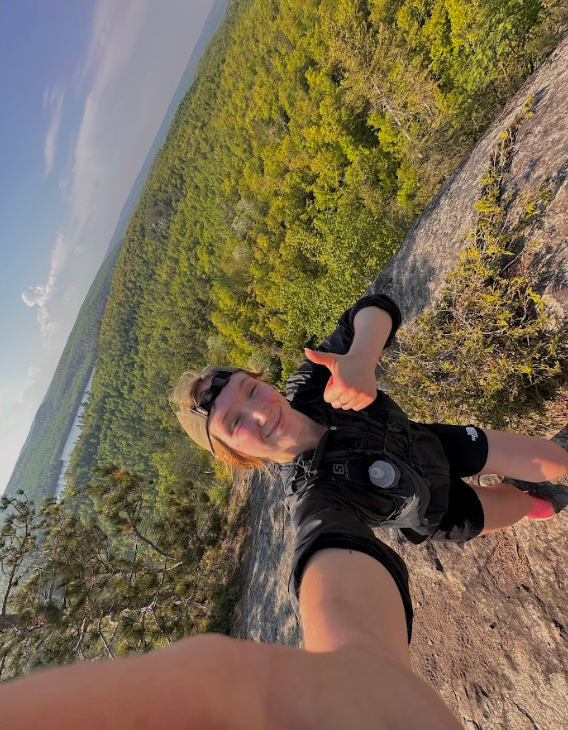
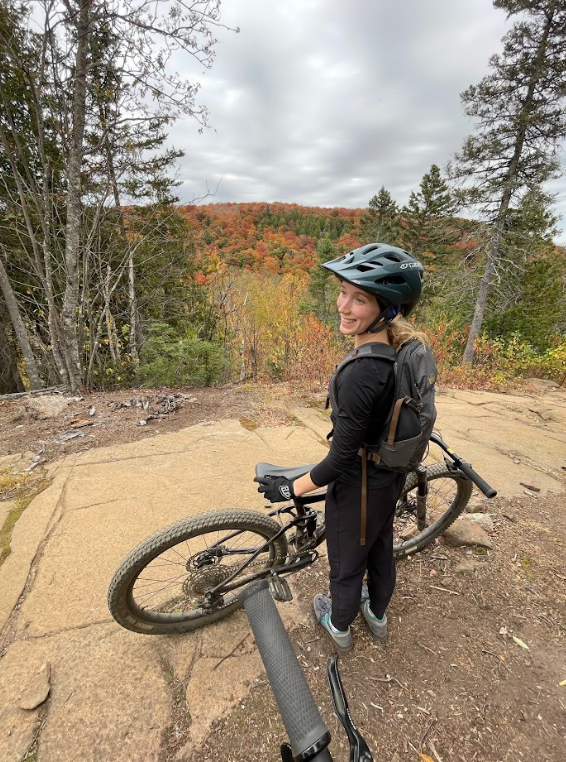
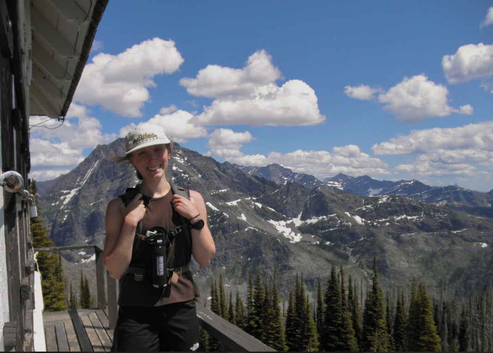

Hobbies
I love trying just about anything outdoors, and am particularly passionate about mountain biking and trail running, while just dipping my toes into surfing and climbing. As an ex-gymnast, I also enjoy spending time doing anything gymnastics-related.
 Trail running is particularly special to me because I began this sport by running up Ely’s peak in Duluth because I wanted a workout. This turned into extended trail runs and various injuries. With strengthening, training, and PT, I am continuing one of my favorite sports.
 Another sport I have enjoyed getting into in adulthood is mountain biking. I have met some wonderful people who are into this sport, and there is a big sense of community for the mountain bikers in Duluth. I have enjoyed the workout of a long ride, as well as downhill laps via ski-lift. It is so fun to be able to progress, when things that used to seem so difficult to you, you cease to notice as a challenge. This is a sport that can be done in some beautiful places, and can be as difficult or as easy as you make it. Some favorite memories of mine are my first race, the feeling of finally clearing a jump, and all the time spent biking with one of my closest friends and biggest inspirations. Another fun memory of mine is biking in Minnesota, and having a coyote jump out on the trail in front of me. I enjoy biking with people who are better than me, because it makes me want to catch up with them.
 I also enjoy hiking and many other various outdoor activities. I enjoy traveling to new places, especially West to the mountains. I have three very active roommates that help get me outside, and some best friends who encourage me to be active. Finding community in my hobbies has been a major part in getting outside!I highly recommend joining a club that aligns with the things you love to do, as you may learn something new.